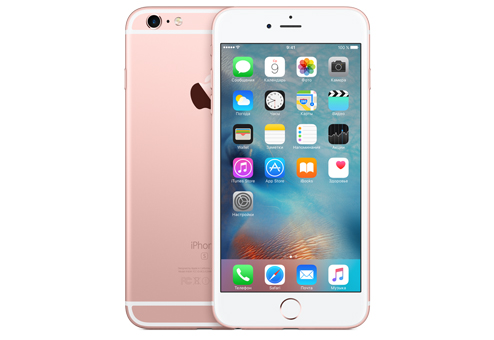

Apple iPhone 6s 64Gb «Розовое золото»
MKU92RU/A
Есть в наличии
85 000 р.
Прежде, чем тестировать - убедитесь, что у вас установлено расширение Яндекс.Советник для вашего браузера:
включите, чтобы увидеть работу кода в действии
В Яндекс.Браузере - расширения Яндекс.Советника и Помощника уже установлены по умолчанию. Просто проверьте, что они включены.
Обратная связь Чук и Гек